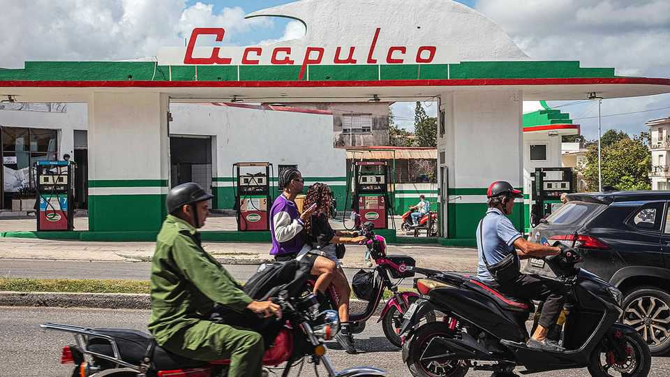

Entrepreneurs in Cuba are snapping up American fuels
Donald Trump’s blockade of the island is starting to have curious effects

Oct 15th 2026
For years Cuba relied on Venezuela to supply much of its energy. Things have changed a lot in the past nine months. Now Cuba is getting all its fuel from the country’s great nemesis, the United States—perhaps as many as 3.2m barrels in July, according to figures recently released by the US Energy Information Administration, a government agency. And whereas the fuel from Venezuela was being bought by Cuba’s government, which at that point monopolised the trade, this time it is (at least in theory) flowing to the Cuban private sector instead.
This changeabout is one result of America’s evolving policy towards the island. Donald Trump and Marco Rubio, his Cuban-American secretary of state, came to power in 2025 promising to squeeze Cuba’s communist government, which has misruled the island since 1959. In January American special forces captured Nicolás Maduro, Venezuela’s dictator, and jailed him in New York; in the wake of that, Mr Trump was able to force Venezuela to stop sending Cuba fuel. America’s president also threatened tariffs on any other country shipping energy to Cuba’s government, which scared off Mexico, too. The idea seemed to be not just that this would make life difficult for the Cuban government but also for its people, increasing the chance that they might seek to topple the regime of their own accord.
The blockade has caused much suffering. The government was already struggling to provide power to the island, because of ageing infrastructure and cash shortages. Apagones (blackouts) have grown so common as to have become the norm. These days the bigger surprise for Cubans are the alumbrones—moments when the power comes on. Additionally, America’s fuel blockade paralysed public transport, prevented distribution of food and other goods, and as a result caused prices for all sorts of things to soar.
Faced with crisis, in February Cuba’s government began letting the island’s private businesses import fuel and started permitting entrepreneurs to lease petrol stations that were previously state-run. The United States likewise gave American sellers permission to export light fuels—diesel, petrol, propane and the like—to Cubans outside government. (A separate, subsequent policy allows American firms to resell Venezuelan crude to Cuba’s private businesses—but no privately owned firm in Cuba has the ability to refine crude or to run a power station, so for now only light fuel is moving.)
These new imports are not fixing the problems with the energy grid, which is managed by the government. People still sit in the dark at night; food still rots in idled fridges and freezers.
But the influx of light fuels has lessened some problems, all the same. Cars are back on the roads; public transport has picked up. People and businesses lucky enough to afford private generators are finding it a bit easier to run them. The price of petrol has dropped to around $2.50 a litre, half the price before the surge in American fuel began. There is even price competition between the petrol stations, says Omar Everleny, an economist in Havana.
The new fuel trade is a boon to Cuba’s downtrodden private businesses. Successive administrations in Washington have said they want to empower entrepreneurs. And for some years Cuba’s government has been grudgingly giving private firms more room, as its ability to meet people’s needs has shrivelled. It legalised freelance work in 1993 and small businesses in 2021. This year it hurriedly passed an impressive-sounding batch of 176 reforms. Largely to appease the Americans, and dig itself out of a hole, it gave somewhat more space to the private sector.
By ending the state fuel monopoly, the government has handed entrepreneurs a new and profitable line of business. “Our policy on Cuba has already caused the largest ever privatisation of Cuba’s economy,” boasts the State Department. The hope is that to get the oil it needs for its power stations, the regime may privatise bits of Cupet, the state oil company, too. On October 12th Cuba passed a law encouraging private participation in the entire oil industry—in the hope of producing more oil itself.
Booming oil sales emphasise how Cuba now depends on a country it still formally considers an enemy. It has not been able to lean on allies, such as China, Mexico and Russia, to help assuage its oil problems. The United States is also Cuba’s biggest single foreign source of food. In three years it has gone from Cuba’s tenth-largest trading partner to its largest, overtaking Spain and China. All this is giving the Trump administration leverage.
Some question exactly how fully the fuel deals are cutting out Cuba’s government. Yes, the state has leased petrol stations to businesses—but its own tankers can be seen filling up at them. The government is not getting oil for its power plants, but some American diesel may be making its way into the 52,000 government-owned generators that supply power to the grid in some areas. Many Cubans are pleased that petrol has dropped in price, but they warn that the new fuel barons are sons and daughters of bigwigs in government. “The people involved in that business are mainly from the cúpula,” says a Havana resident, using the Cuban term for the ruling elite. There is a danger of merely swapping totalitarianism for oligarchy.
Some United States officials seem not to mind. However much they despise Cuba’s communists, they do not want a humanitarian catastrophe 90 miles (145km) off the Florida coast. And they can at least claim that their policies towards Cuba have been unabashedly “America First”. The fuel trade is helping mint a new generation of Cuban-American entrepreneurs in Florida. And if it becomes feasible for Cuba’s private businesses to import and make use of crude oil, that will come via the United States from Venezuela. In other words, it would be from the same source as before Mr Trump’s oil blockade, but with American business folk now inserted bluntly in the middle.
Muddled policymaking in Washington risks sabotaging some of what is currently being achieved. On September 30th the Trump administration moved to freeze American bank accounts being used by Cuban entrepreneurs—hurting the very people whom its fuel policies have recently empowered. Mr Trump, in trying to topple the Cuban government, may inadvertently have struck upon a policy that can boost the private sector and loosen the regime’s grip over the island’s unhappy people. ■